library(jsonlite)
library(tidyverse)
# Load the YouGov tweet sentiment data from GitHub
yg <- fromJSON("https://github.com/kennyjoseph/trump_tweets_icwsm/raw/master/data/all_yougov_tweetdata_updated.json")6 Mixed data (strings and numbers)
In this exercise, we will load a dataset of YouGov sentiment ratings of Trump tweets and explore how different people rate those tweets. (You can find the associated slides here.)
6.1 Structure of the dataset
- The underlying data consists of tweets
- So we could do text analysis
- We will mostly focus here on visualizing numerical ratings
- (But each word can of course be considered a variable!)
What you will be able to practice here:
- Loading JSON data into R
- Calculating summary statistics (means, proportions)
- Transforming data (wide to long)
- Visualizing distributions and comparisons using ggplot2
- Highlighting specific observations in plots
6.1.1 Loading Libraries and Data
First, we load the necessary libraries. jsonlite lets us read JSON data directly from a URL, and tidyverse provides a suite of data manipulation and visualization tools.
Check what we have imported:
names(yg)[1] "text" "group" "data" "created_at"
[5] "survey_date" "objectID" "_highlightResult"# View first 5 tweet texts
yg$text[1:5][1] "Great honor to be headed to the Army-Navy game today. Will be there shortly, landing now! https://t.co/ByAfESq8aS"
[2] "....left and right, he then woke up from his dream screaming that HE LIED. Next time I go to Vietnam I will ask 'the Dick' to travel with me!"
[3] "Watched Da Nang Dick Blumenthal on television spewing facts almost as accurate as his bravery in Vietnam (which he never saw). As the bullets whizzed by Da Nang Dicks head, as he was saving soldiers...."
[4] "Very sad day & night in Paris. Maybe it's time to end the ridiculous and extremely expensive Paris Agreement and return money back to the people in the form of lower taxes? The U.S. was way ahead of the curve on that and the only major country where emissions went down last year!"
[5] "'This is collusion illusion, there is no smoking gun here. At this late date, after all that we have gone through, after millions have been spent, we have no Russian Collusion. There is nothing impeachable here.' @GeraldoRivera Time for the Witch Hunt to END!" # Peek at the nested data frame
yg$data %>% tibble() %>% head()# A tibble: 6 × 4
All$score $base $data Democrat$score Republican$score Independent$score
<dbl> <int> <list> <dbl> <dbl> <dbl>
1 20.6 1000 <dbl [5]> -38.2 104. 37.3
2 -58.3 1000 <dbl [5]> -140. 45.1 -48.0
3 -58.3 1000 <dbl [5]> -140. 45.1 -48.0
4 -26.7 1000 <dbl [5]> -123. 92.1 -3.53
5 -34.8 1000 <dbl [5]> -133. 99.1 -22.8
6 13.5 1000 <dbl [5]> -54.3 110. 29.5
# ℹ 6 more variables: Democrat$base <int>, $data <list>, Republican$base <int>,
# $data <list>, Independent$base <int>, $data <list>6.1.2 Creating a Tidy Data Frame
We now construct a tidy tibble that includes:
text: the tweet contentscore: overall sentiment scorescore_dems: average rating by Democratsscore_reps: average rating by Republicans
data <- tibble(
text = yg$text,
score = yg$data$All$score,
score_dems = yg$data$Democrat$score,
score_reps = yg$data$Republican$score
)
# Display the first few rows
data# A tibble: 4,404 × 4
text score score_dems score_reps
<chr> <dbl> <dbl> <dbl>
1 Great honor to be headed to the Army-Navy game t… 20.6 -38.2 104.
2 ....left and right, he then woke up from his dre… -58.3 -140. 45.1
3 Watched Da Nang Dick Blumenthal on television sp… -58.3 -140. 45.1
4 Very sad day & night in Paris. Maybe it's time t… -26.7 -123. 92.1
5 'This is collusion illusion, there is no smoking… -34.8 -133. 99.1
6 ....I am thankful to both of these incredible me… 13.5 -54.3 110.
7 I am pleased to announce my nomination of four-s… 13.5 -54.3 110.
8 AFTER TWO YEARS AND MILLIONS OF PAGES OF DOCUMEN… -39.6 -136. 78.2
9 The idea of a European Military didn't work out … -18.2 -109. 87.2
10 The Paris Agreement isn't working out so well fo… -42.2 -131. 69.6
# ℹ 4,394 more rows6.1.3 Summary Statistics by Party
Check for missing values:
any(is.na(data$score_dems)) # Were there any missing Democrat ratings?[1] FALSEany(is.na(data$score_reps)) # Were there any missing Republican ratings?[1] FALSECalculate the average rating among Democrats and Republicans:
mean_dems <- data$score_dems %>% mean(na.rm = TRUE)
mean_reps <- data$score_reps %>% mean(na.rm = TRUE)
mean_dems # Average rating by Democrats[1] -93.17322mean_reps # Average rating by Republicans[1] 100.51696.1.4 A quick look at the data
- What were the most popular tweets?
- What is the range of the data?
# Arrange tweets by descending and ascending overall score
# Note this will not influence the original data, or subsequent plots
data %>% arrange(score) %>% head()# A tibble: 6 × 4
text score score_dems score_reps
<chr> <dbl> <dbl> <dbl>
1 I know Mark Cuban well. He backed me big-time but… -81.4 -134. -18.0
2 I heard poorly rated @Morning_Joe speaks badly of… -77.5 -143. 6.39
3 ...to Mar-a-Lago 3 nights in a row around New Yea… -77.5 -143. 6.39
4 Crazy Joe Scarborough and dumb as a rock Mika are… -76.7 -150. 27.7
5 Lebron James was just interviewed by the dumbest … -72.3 -168. 45.8
6 Just watched Wacky Tom Steyer, who I have not see… -71.7 -148. 45.9 data %>%
summarize(lowest = min(score),highest=max(score))# A tibble: 1 × 2
lowest highest
<dbl> <dbl>
1 -81.4 82.96.1.5 Exploring Overall Sentiment Distribution
# Histogram of overall sentiment scores
data %>%
ggplot(aes(x = score)) +
geom_histogram(bins = 35, fill = "yellow3", color = "black") +
theme_bw() +
labs(title = "Distribution of Overall Sentiment Scores", x = "Sentiment Score", y = "Count")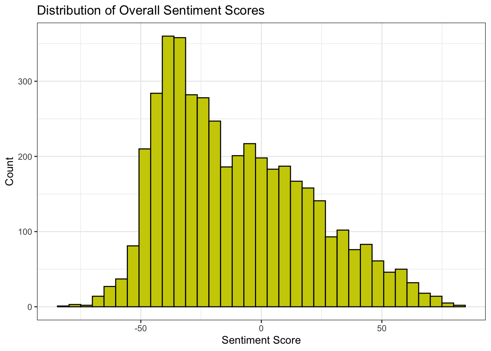
Or consider running:
# Density plot of overall scores
data %>%
ggplot(aes(x = score)) +
geom_density() +
theme_bw() +
labs(title = "Density of Overall Sentiment Scores", x = "Sentiment Score", y = "Density")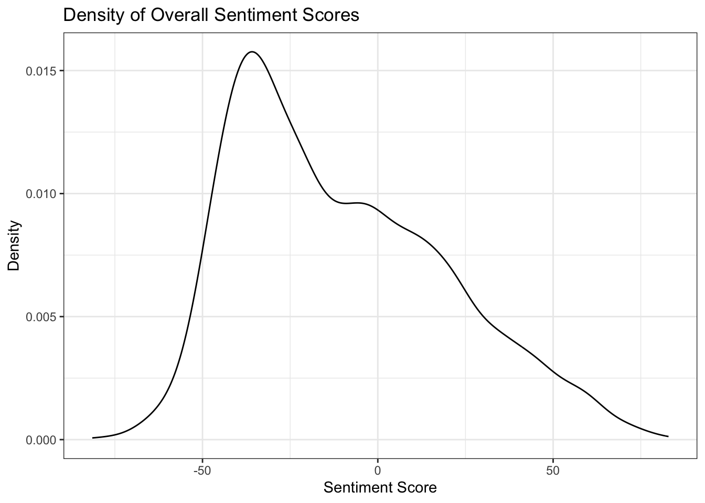
6.1.6 Breaking down the data by group
Compute and compare mean ratings by party
What should the structure of the input be?
data %>%
summarize(
Democrats = mean(score_dems, na.rm = TRUE),
Republicans = mean(score_reps, na.rm = TRUE)
) # A tibble: 1 × 2
Democrats Republicans
<dbl> <dbl>
1 -93.2 101.Compute and compare mean ratings by party
What should the structure of the input be?
Better to stack the data (go from wide to long)
data %>%
summarize(
Democrats = mean(score_dems, na.rm = TRUE),
Republicans = mean(score_reps, na.rm = TRUE)
) %>% pivot_longer(cols = everything(),
names_to = "party",
values_to = "mean_score")# A tibble: 2 × 2
party mean_score
<chr> <dbl>
1 Democrats -93.2
2 Republicans 101. 6.1.7 Preparing a simple bar plot
data %>%
summarize(
Democrats = mean(score_dems, na.rm = TRUE),
Republicans = mean(score_reps, na.rm = TRUE)
) %>%
pivot_longer(cols = everything(), names_to = "party", values_to = "mean_score") %>%
ggplot(aes(x = party, y = mean_score)) +
geom_col(aes(fill = party), width = 0.3) +
geom_hline(yintercept = 0, color = "black") +
scale_fill_manual(values = c("Democrats" = "blue3", "Republicans" = "red3")) +
theme_bw(base_size = 12) +
labs(
x = "Party",
y = "Mean Sentiment Score",
title = "Mean Sentiment Score by Party (All Tweets)",
fill = "Party"
)6.1.8 Breaking down the data by group
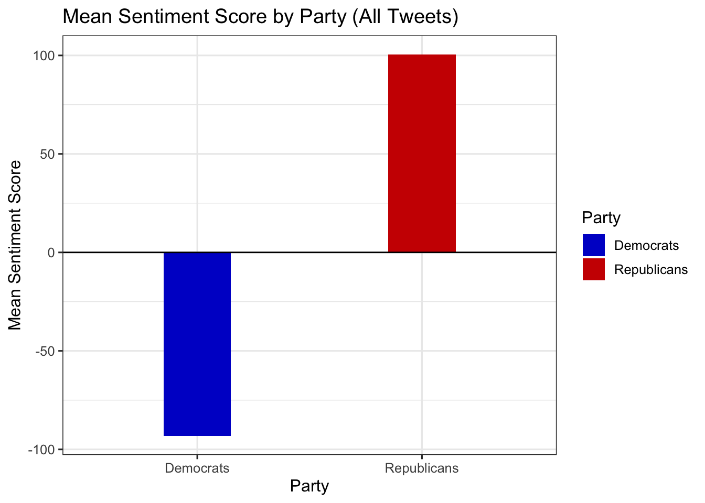
6.1.9 Scatterplot of Party Ratings Against Each Other
Plot Democrat ratings (score_dems) against Republican ratings (score_reps) to see whether respondents tend to agree (in spite of an anticipate “intercept shift”)
fig_layer <- data %>%
ggplot(aes(x = score_reps, y = score_dems))
fig_layer +
geom_point()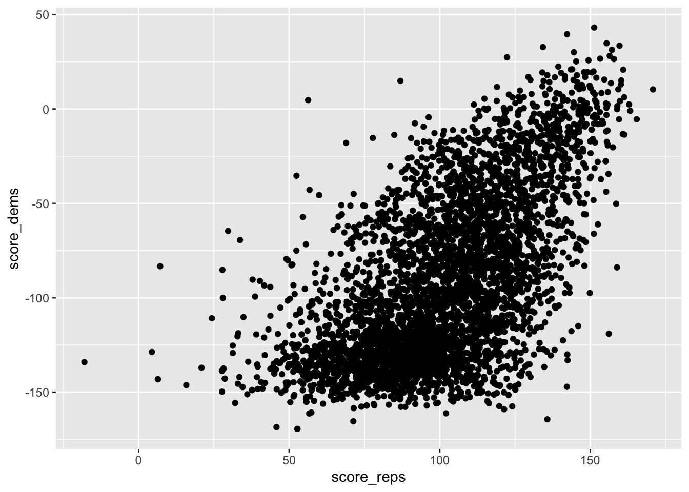
6.1.10 Ratings by party
Another way to show the correlation
fig_layer +
geom_smooth(method = "lm") +
theme_bw() +
labs(
title = "Relationship Between Republican and Democrat Ratings",
x = "Republican Rating",
y = "Democrat Rating"
)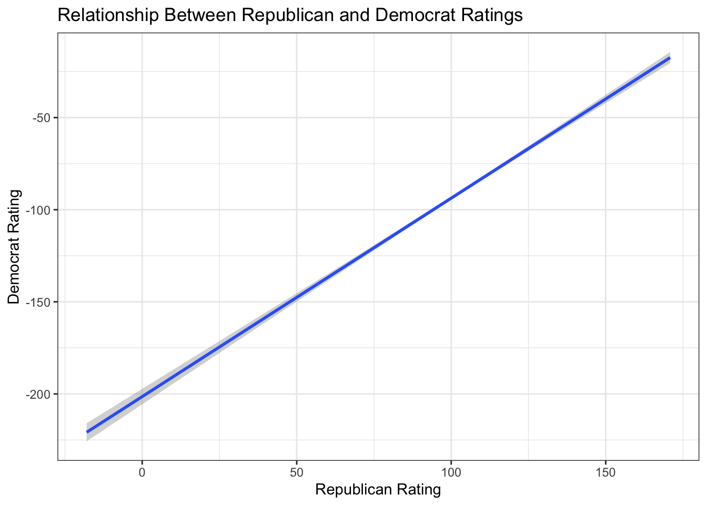
6.1.11 Comparing Distributions of Ratings
Reshape the full data for plotting density curves of each rating type:
( long_data <- data %>%
pivot_longer(
cols = c(score, score_dems, score_reps),
names_to = "party",
values_to = "score"
) )# A tibble: 13,212 × 3
text party score
<chr> <chr> <dbl>
1 Great honor to be headed to the Army-Navy game today. Will be t… score 20.6
2 Great honor to be headed to the Army-Navy game today. Will be t… scor… -38.2
3 Great honor to be headed to the Army-Navy game today. Will be t… scor… 104.
4 ....left and right, he then woke up from his dream screaming th… score -58.3
5 ....left and right, he then woke up from his dream screaming th… scor… -140.
6 ....left and right, he then woke up from his dream screaming th… scor… 45.1
7 Watched Da Nang Dick Blumenthal on television spewing facts alm… score -58.3
8 Watched Da Nang Dick Blumenthal on television spewing facts alm… scor… -140.
9 Watched Da Nang Dick Blumenthal on television spewing facts alm… scor… 45.1
10 Very sad day & night in Paris. Maybe it's time to end the ridic… score -26.7
# ℹ 13,202 more rowslong_data %>%
ggplot(aes(y = party, x = score)) +
geom_point(alpha = .1) + labs(x="Tweet ratings",y="")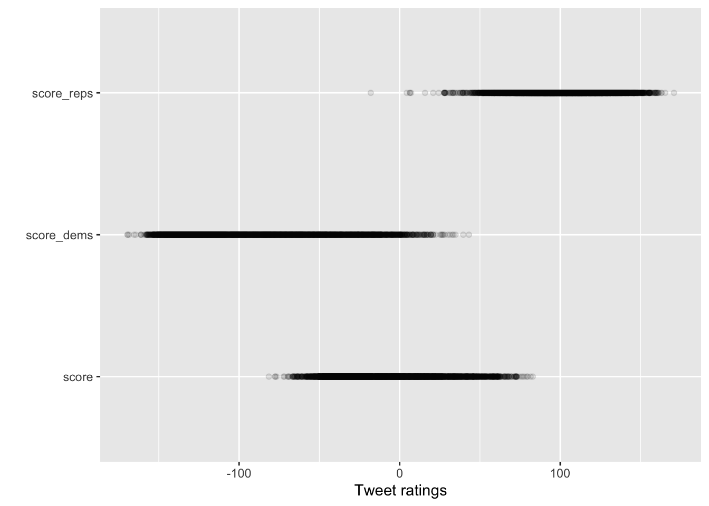
long_data %>%
ggplot(aes(y = party, x = score)) +
geom_jitter(alpha = .1) + labs(x="Tweet ratings",y="")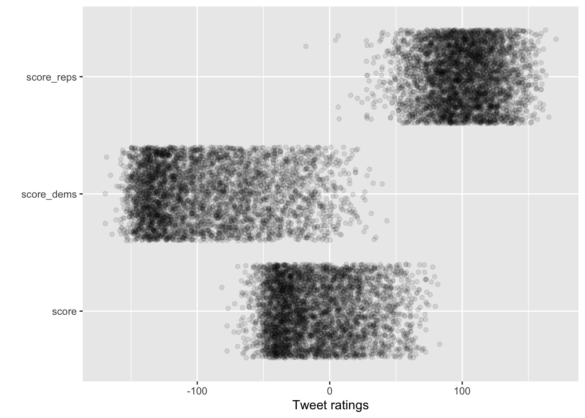
long_data %>%
ggplot(aes(y = party, x = score)) +
geom_jitter(alpha = .05,height = .2) + labs(x="Tweet ratings",y="")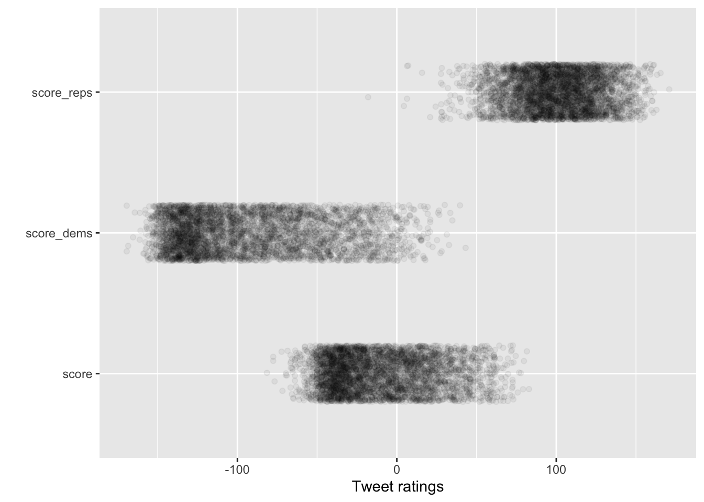
long_data %>%
mutate(Party = case_when(
party == "score_dems" ~ "Democrats",
party == "score_reps" ~ "Republicans",
TRUE ~ "Overall") ) %>%
ggplot(aes(y = Party, x = score)) +
geom_jitter(alpha = .05,height = .2) + labs(x="Tweet ratings",y="")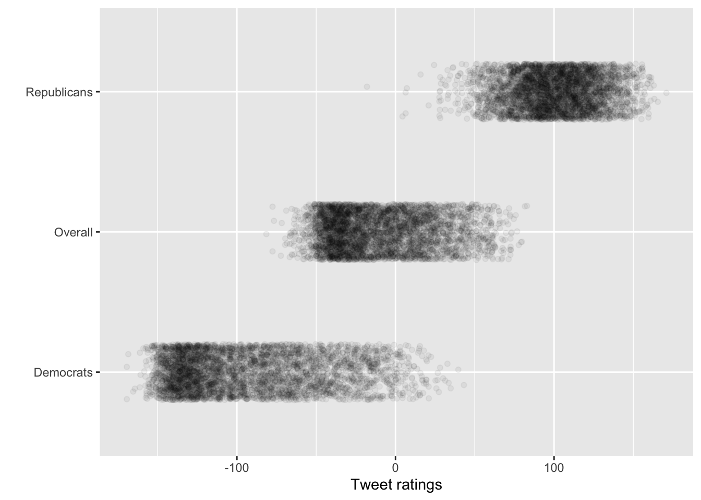
long_data %>%
mutate(Party = case_when(
party == "score_dems" ~ "Among Democrats",
party == "score_reps" ~ "Among Republicans",
TRUE ~ "Overall") ) %>%
ggplot(aes(y = Party, x = score, color = Party)) +
geom_jitter(alpha = .065,height = .2, show.legend = F) + labs(x="Tweet ratings",y="") +
scale_color_manual(values = c("Among Democrats" = "steelblue", "Among Republicans" = "red4", "score"= "Overall")) + theme_minimal() 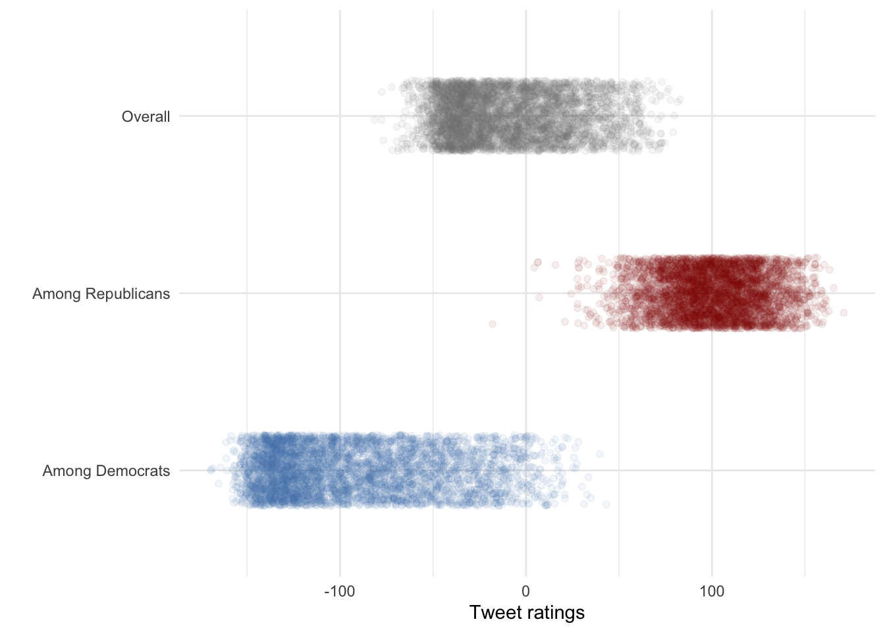
6.2 Other ways to show distributions of numerical variables
long_data %>%
mutate(Party = case_when(
party == "score_dems" ~ "Among Democrats",
party == "score_reps" ~ "Among Republicans",
TRUE ~ "Overall") ) %>%
ggplot(aes(y = Party, x = score, fill = Party)) +
geom_boxplot() +
scale_fill_manual(values = c("Among Democrats" = "steelblue", "Among Republicans" = "red4", "score"= "Overall")) + theme_minimal() 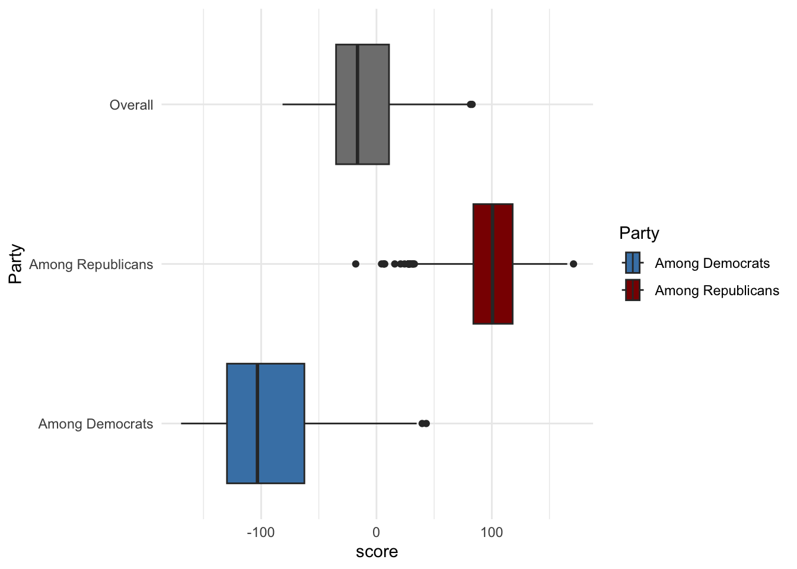
long_data %>%
mutate(Party = case_when(
party == "score_dems" ~ "Among Democrats",
party == "score_reps" ~ "Among Republicans",
TRUE ~ "Overall") ) %>%
ggplot(aes(y = Party, x = score, fill = Party)) +
geom_boxplot(show.legend = FALSE) +
scale_fill_manual(values = c("Among Democrats" = "steelblue", "Among Republicans" = "red4", "score"= "Overall")) + theme_minimal() 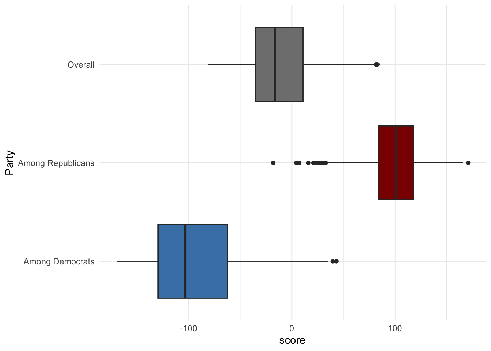
You can also add a jitter layer to the boxplot to show individual data points:
long_data %>%
mutate(Party = case_when(
party == "score_dems" ~ "Among Democrats",
party == "score_reps" ~ "Among Republicans",
TRUE ~ "Overall") ) %>%
ggplot(aes(y = Party, x = score, fill = Party)) +
geom_jitter(alpha = .065,height = .2, show.legend = F) + labs(x="Tweet ratings",y="") +
geom_boxplot(show.legend = FALSE) +
scale_fill_manual(values = c("Among Democrats" = "steelblue", "Among Republicans" = "red4", "score"= "Overall")) + theme_minimal() 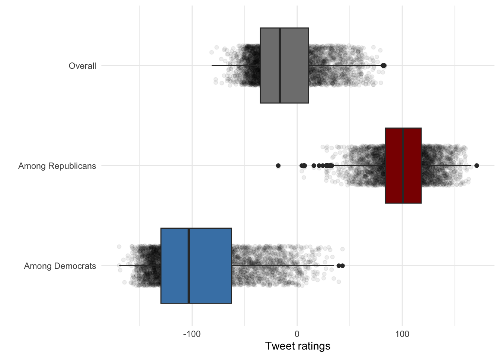
Adjust the boxplot transparency:
long_data %>%
mutate(Party = case_when(
party == "score_dems" ~ "Among Democrats",
party == "score_reps" ~ "Among Republicans",
TRUE ~ "Overall") ) %>%
ggplot(aes(y = Party, x = score, fill = Party)) +
geom_jitter(alpha = .065,height = .2, show.legend = F) + labs(x="Tweet ratings",y="") +
geom_boxplot(show.legend = FALSE,alpha=.6) +
scale_fill_manual(values = c("Among Democrats" = "steelblue", "Among Republicans" = "red4", "score"= "Overall")) + theme_minimal() 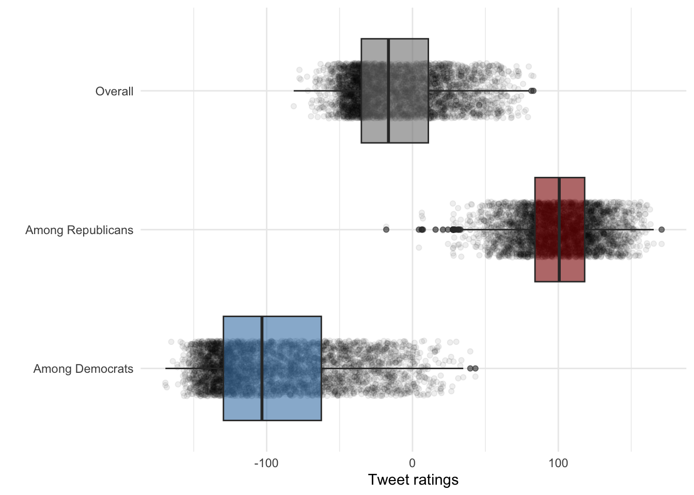
Make the points more subtle
long_data %>%
mutate(Party = case_when(
party == "score_dems" ~ "Among Democrats",
party == "score_reps" ~ "Among Republicans",
TRUE ~ "Overall") ) %>%
ggplot(aes(y = Party, x = score, fill = Party)) +
geom_jitter(alpha = .045,height = .1, size=.25,show.legend = F) + labs(x="Tweet ratings",y="") +
geom_boxplot(show.legend = FALSE,alpha=.6) +
scale_fill_manual(values = c("Among Democrats" = "steelblue", "Among Republicans" = "red4", "score"= "Overall")) + theme_minimal() 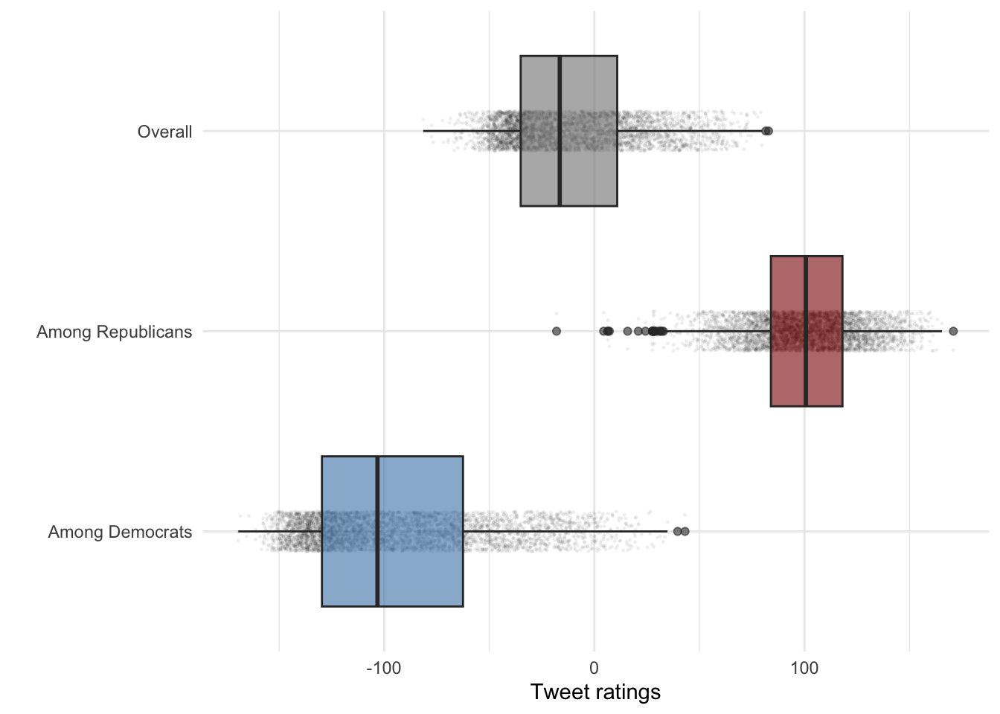
Make the boxes narrower and the border thinner:
long_data %>%
mutate(Party = case_when(
party == "score_dems" ~ "Among Democrats",
party == "score_reps" ~ "Among Republicans",
TRUE ~ "Overall") ) %>%
ggplot(aes(y = Party, x = score, fill = Party)) +
geom_jitter(alpha = .045,height = .1, size=.25,show.legend = F) + labs(x="Tweet ratings",y="") +
geom_boxplot(alpha=.75,size=.2,width=.3,show.legend = FALSE,) +
scale_fill_manual(values = c("Among Democrats" = "steelblue", "Among Republicans" = "red4", "score"= "Overall")) + theme_minimal() 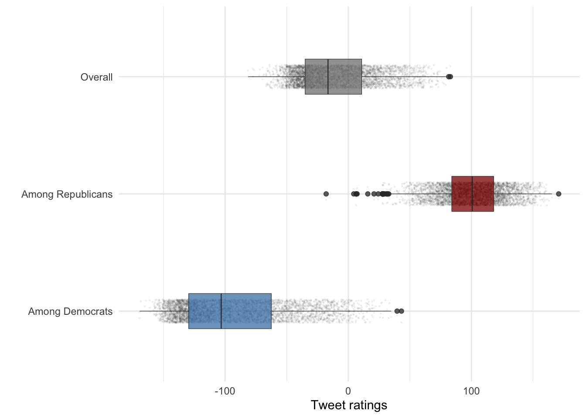
Adjust the dot colors as well:
long_data %>%
mutate(Party = case_when(
party == "score_dems" ~ "Among Democrats",
party == "score_reps" ~ "Among Republicans",
TRUE ~ "Overall") ) %>%
ggplot(aes(y = Party, x = score, fill = Party, color = Party)) +
geom_jitter(alpha = .045,height = .1, size=.25,show.legend = F) + labs(x="Tweet ratings",y="") +
geom_boxplot(alpha=.75,size=.2,width=.3,show.legend = FALSE,) +
scale_color_manual(values = c("Among Democrats" = "steelblue", "Among Republicans" = "red4", "score"= "Overall")) + scale_fill_manual(values = c("Among Democrats" = "steelblue", "Among Republicans" = "red4", "score"= "Overall")) + theme_minimal() 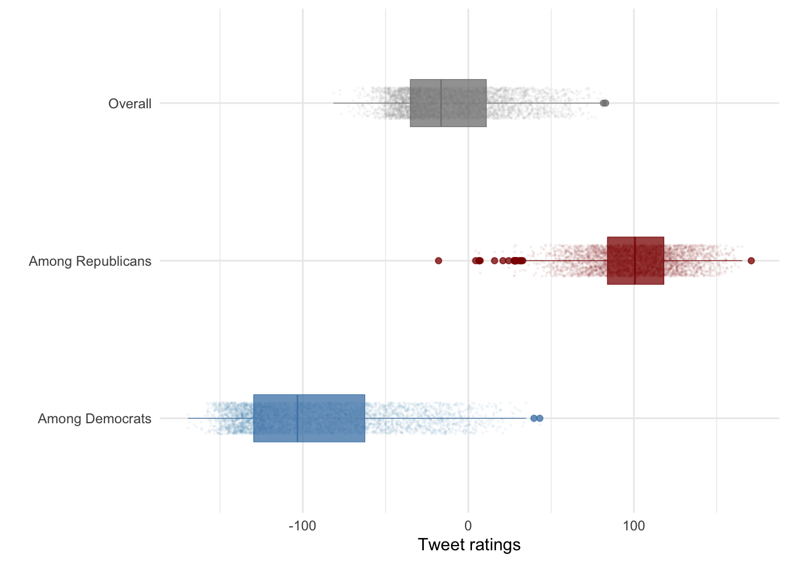
Make final adjustments:
long_data %>%
mutate(Party = case_when(
party == "score_dems" ~ "Among Democrats",party == "score_reps" ~ "Among Republicans",TRUE ~ "Overall"), Party = factor(Party,levels = c("Among Republicans","Overall","Among Democrats"))) %>%
ggplot(aes(y = Party, x = score, fill = Party, color = Party)) +
geom_jitter(alpha = .045,height = .1, size=.25,show.legend = F) + labs(x="Tweet ratings",y="") +
geom_boxplot(outliers=F,alpha=.75,size=.2,width=.3,show.legend = FALSE,) +
scale_color_manual(values = c("Among Democrats" = "steelblue", "Among Republicans" = "red4", "score"= "Overall")) + scale_fill_manual(values = c("Among Democrats" = "steelblue", "Among Republicans" = "red4", "score"= "Overall")) + theme_minimal() + ggtitle("Ratings of Trump tweets among YouGov respondents")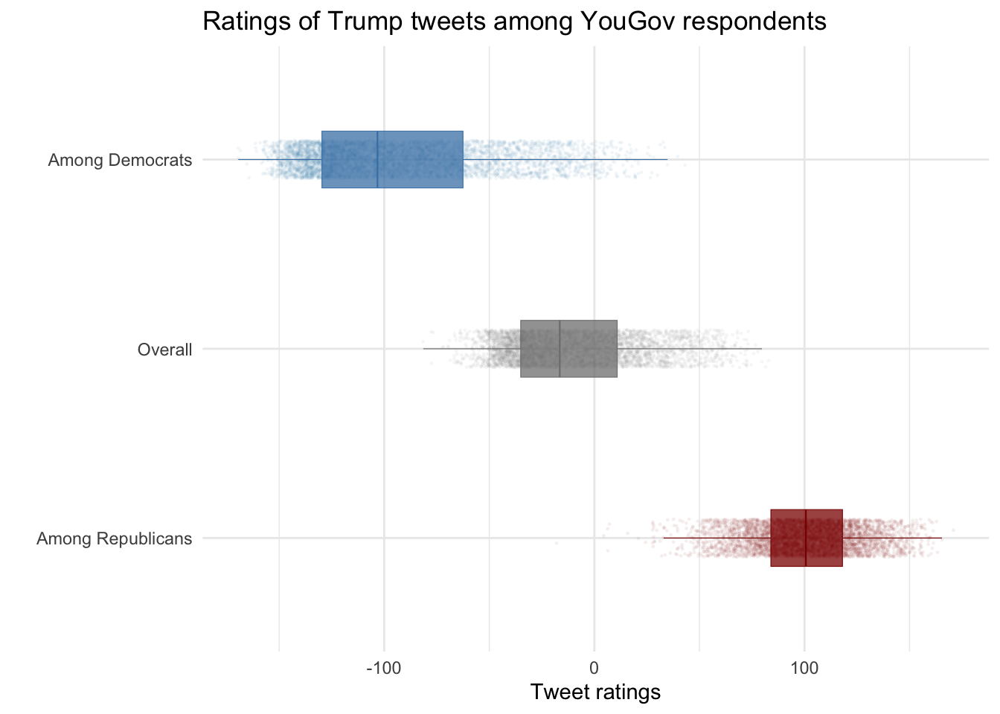
6.3 Still more ways to show distributions
long_data %>%
ggplot(aes(x = score, color = party)) +
geom_density() +
theme_bw() + labs(title = "Density of Scores by Rating Type", x = "Score", y = "Density")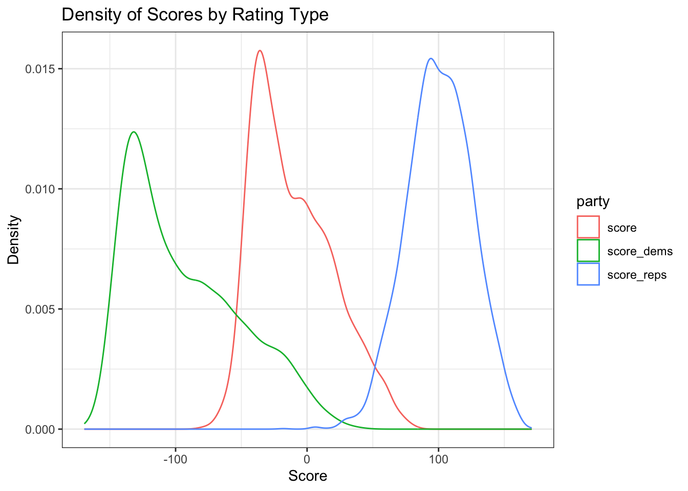
long_data %>%
ggplot(aes(x = score, fill = party)) +
geom_density(alpha = 0.6, show.legend = TRUE) +
scale_fill_manual(
values = c("score_dems" = "steelblue", "score_reps" = "red4", "score" = "grey")
) +
theme_bw(base_size = 12) +
labs(title = "Overlayed Density of Scores", x = "Score", y = "Density", fill = "Rating Type")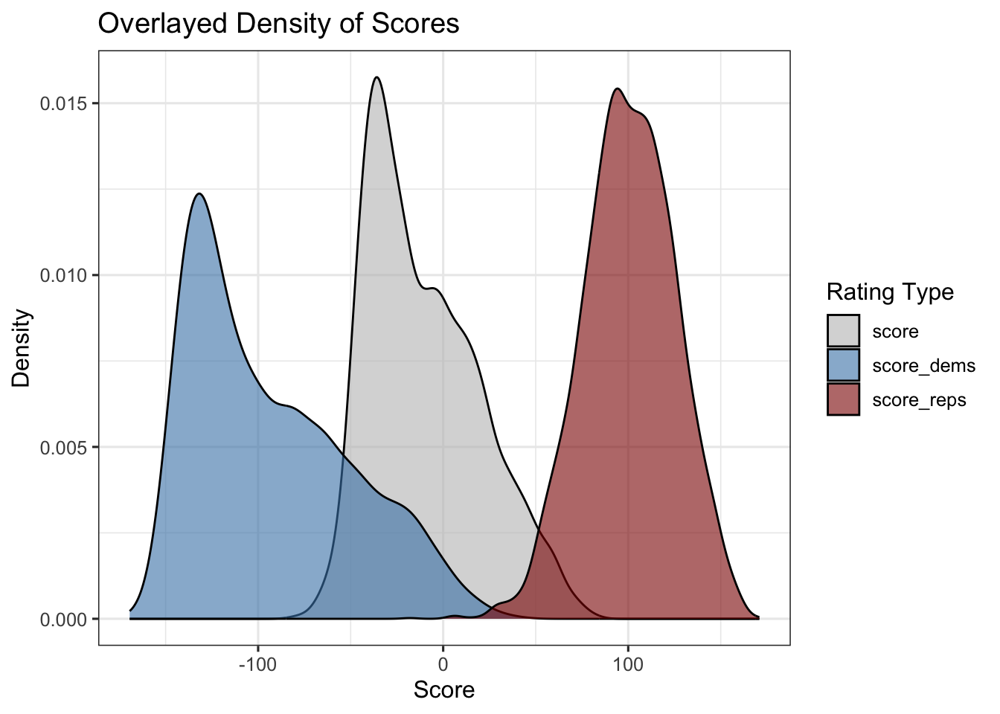
long_data %>%
ggplot(aes(x = score, fill = party)) +
geom_histogram(alpha = 0.5, color = "black", bins = 30) +
scale_fill_brewer(palette = "Set1", direction = -1) +
theme_bw() +
labs(title = "Histogram of Scores by by Party ID", x = "Score", y = "Count", fill = "Rating Type")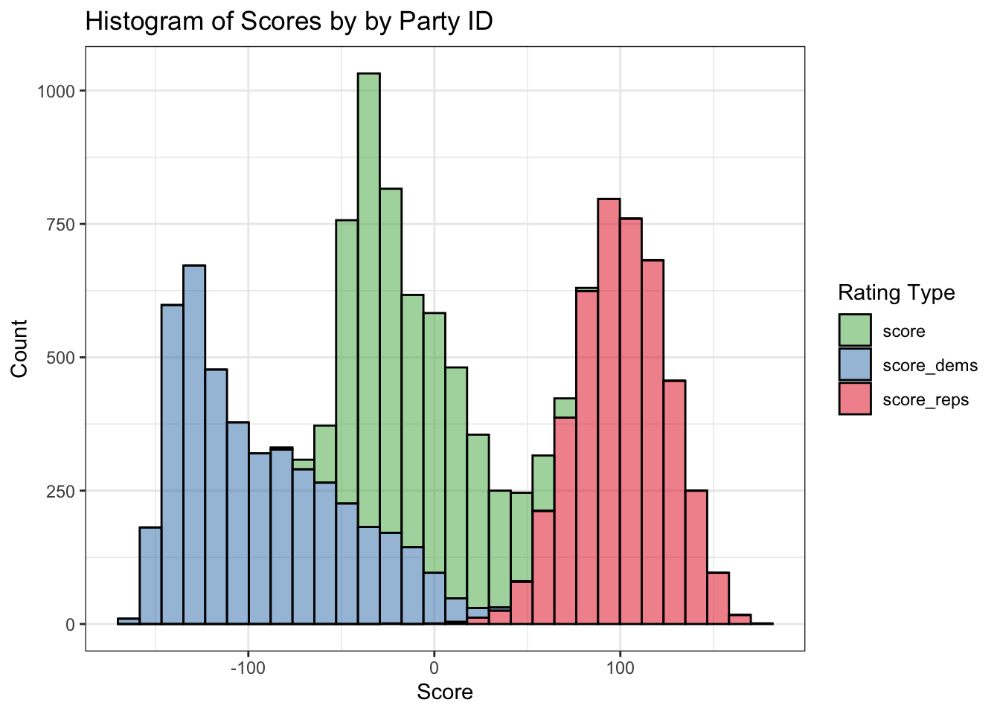
6.4 Content classification
6.4.1 Identifying Tweets that Mention Obama
We create a binary indicator obama which is 1 if the tweet text contains the word “Obama”, otherwise 0. Then we can compute how often tweets mention Obama.
# Create indicator for "Obama"
data$obama <- ifelse(str_detect(data$text, "Obama"), 1, 0)
# Frequency of Obama mentions
table(data$obama)
0 1
4216 188 # Percentage of tweets that mention Obama
prop_obama <- data$obama %>% mean()
prop_obama[1] 0.042688476.4.2 Comparing Ratings for Obama-Mentioning Tweets
Compute mean sentiment ratings by Democrats and Republicans for tweets that mention Obama:
data %>%
filter(obama == 1) %>%
summarize(
mean_dems = mean(score_dems, na.rm = TRUE),
mean_reps = mean(score_reps, na.rm = TRUE)
)# A tibble: 1 × 2
mean_dems mean_reps
<dbl> <dbl>
1 -127. 90.86.4.3 Comparing Ratings for Obama-Mentioning Tweets
Next, compare average ratings between tweets that do and do not mention Obama:
data %>%
group_by(obama) %>%
summarize(
mean_dems = mean(score_dems, na.rm = TRUE),
mean_reps = mean(score_reps, na.rm = TRUE)
)# A tibble: 2 × 3
obama mean_dems mean_reps
<dbl> <dbl> <dbl>
1 0 -91.6 101.
2 1 -127. 90.8Make a nicer table with descriptive labels and rounded values:
tab <- data %>%
group_by(obama) %>%
summarize(
mean_dems = mean(score_dems, na.rm = TRUE),
mean_reps = mean(score_reps, na.rm = TRUE)
) %>%
mutate(obama = ifelse(obama == 1, "Obama Mentioned", "Obama Not Mentioned")) %>%
rename(
"Tweet type" = obama,
"Avg. rating among Democrats" = mean_dems,
"Avg. rating among Republicans" = mean_reps
)
# Display the table
(tab %>% knitr::kable(digits = 1))| Tweet type | Avg. rating among Democrats | Avg. rating among Republicans |
|---|---|---|
| Obama Not Mentioned | -91.6 | 100.9 |
| Obama Mentioned | -127.4 | 90.8 |
6.4.4 Highlighting Obama-Mention Tweets in Scatterplot
Identify tweets that mention Obama in the scatter of party ratings:
data %>%
ggplot(aes(x = score_reps, y = score_dems)) +
geom_point(aes(color = factor(obama)), size = 0.4) +
scale_color_manual(values = c("0" = "grey60", "1" = "orange")) +
theme_bw(base_size = 12) + labs(title = "Party Ratings with Obama-Mention Tweets Highlighted",x = "Republican Rating",y = "Democrat Rating",color = "Obama Mentioned")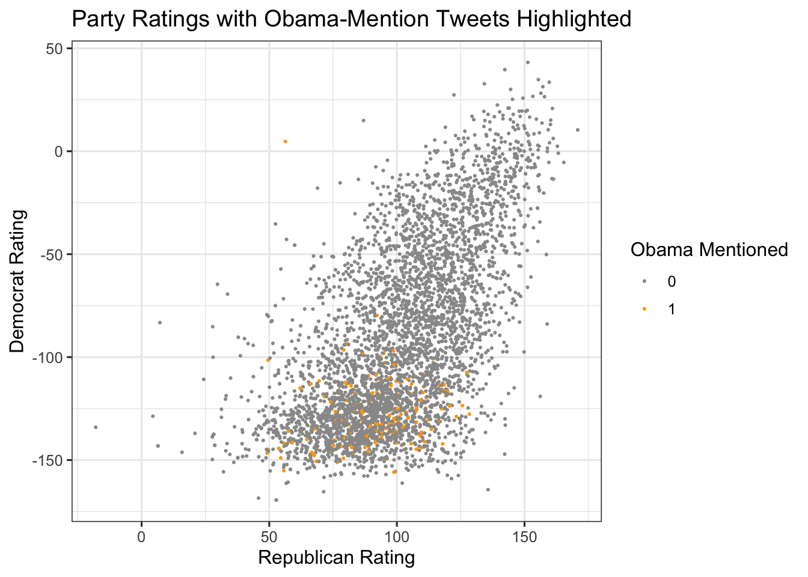
6.4.5 Highlighting Obama-Mention Tweets in Scatterplot
If desired, use gghighlight to emphasize only the Obama-mentioning tweets:
library(gghighlight)
data %>%
ggplot(aes(x = score_reps, y = score_dems)) +
geom_point(aes(color = obama), size = 0.4,show.legend=F) +
gghighlight(obama == 1) + theme_bw(base_size = 12) + labs(subtitle = "Highlighted tweets mention Barack Obama", color = "Obama Mention")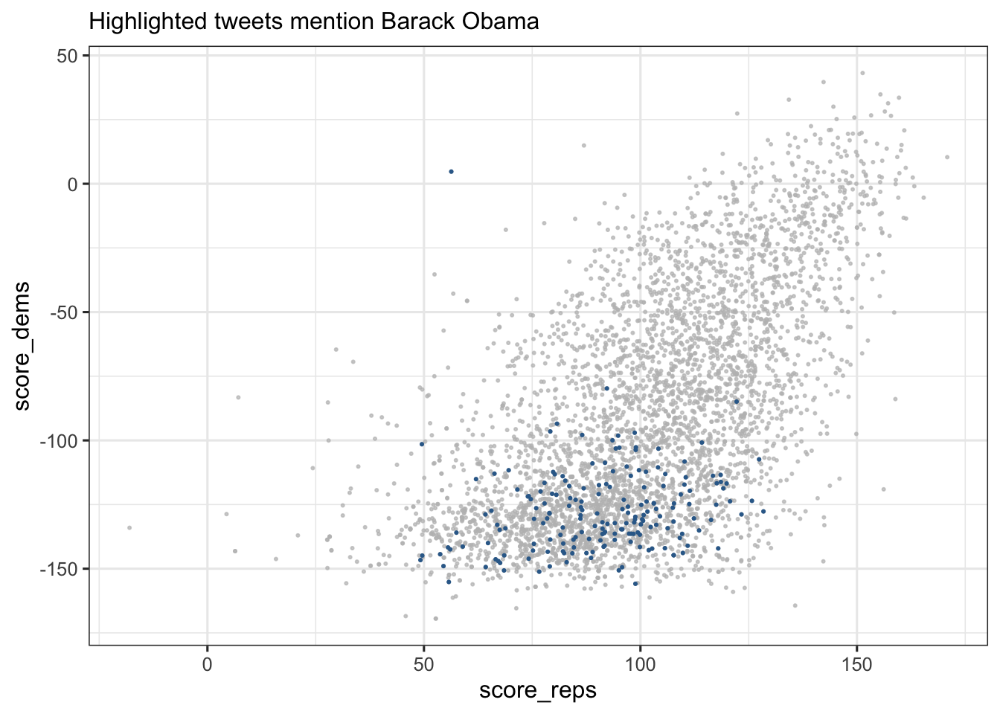
6.5 Showing the full text of tweets
6.5.1 Pulling Out Specific Tweets
- We can hand-pick some observations and display the full text of the tweets which were rated
- For example, here select tweets from rows 19 through 23 and display their texts along with their ratings:
data[19:22, ] %>%
ggplot(aes(y = text)) +
geom_point(aes(x = score_dems), color = "blue3") +
geom_point(aes(x = score_reps), color = "red3") +
scale_y_discrete(labels = scales::label_wrap(50)) +
labs(x = "Rating", title = "Ratings of Selected Tweets")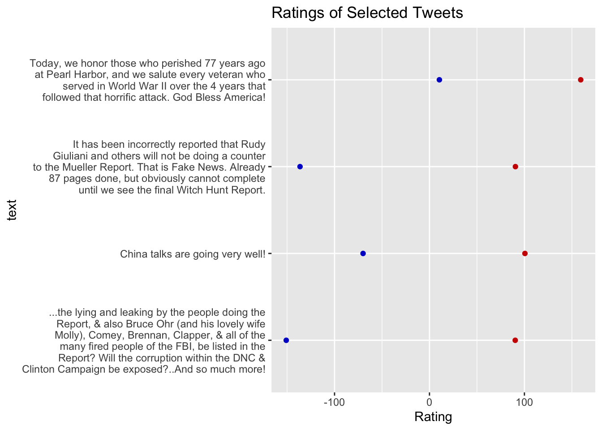
data[60:63, ] %>%
ggplot(aes(y = text)) +
geom_col(aes(x = score_dems), fill = "blue3",width=.5) +
geom_col(aes(x = score_reps), fill = "red3",width=.5) +
scale_y_discrete(labels = scales::label_wrap(50)) +
labs(x = "Rating", title = "Ratings of Selected Tweets",y="")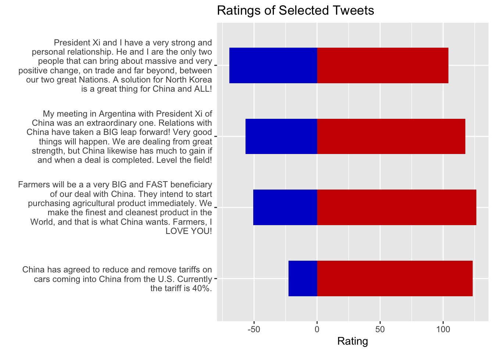
6.5.2 Finding unusual / surprising observations
Let’s see if there are tweets mentioning Obama with POSITIVE Democrat ratings
# Extract tweets mentioning Obama with positive Democrat ratings
data %>%
filter(obama == 1, score_dems >= 0) %>% nrow()[1] 1So, there was one such tweet! What did it say?
# Extract tweets mentioning Obama with positive Democrat ratings
data %>%
filter(obama == 1, score_dems >= 0) %>% pull(text)[1] "I agree with President Obama 100%! https://t.co/PI3aW1Zh5Q"6.6 Conclusion
Students should now be able to:
- Load JSON data into R and inspect its structure
- Calculate and interpret summary statistics by group
- Create and format tables in markdown
- Reshape data between wide and long formats
- Visualize distributions and relationships with ggplot2
- Highlight specific observations in visualizations
Feel free to modify the code and experiment with different subsets or additional variable transformations.